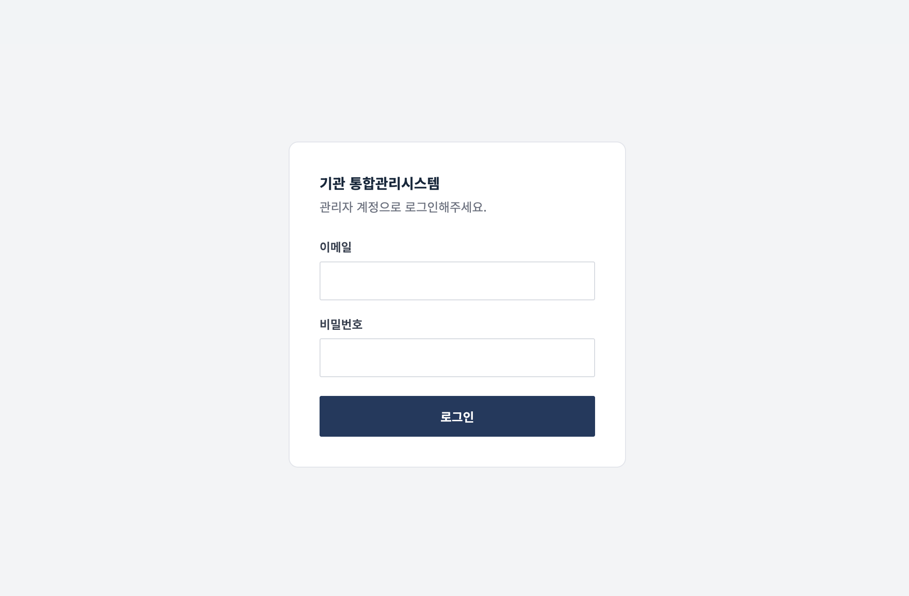
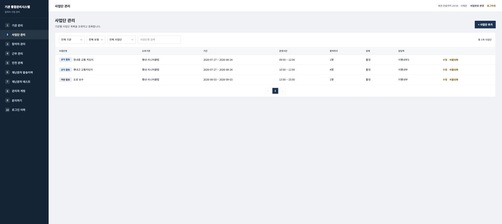
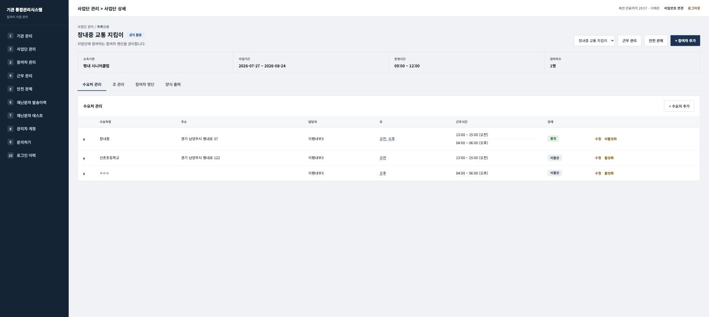
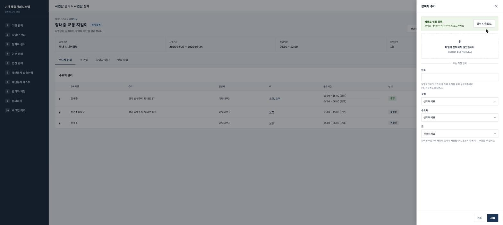
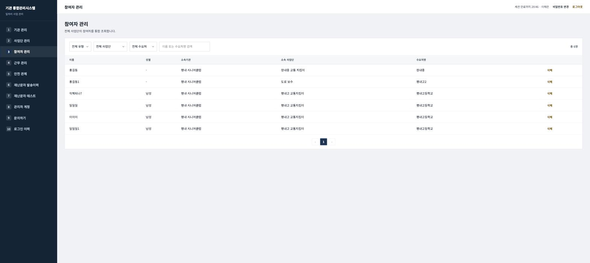
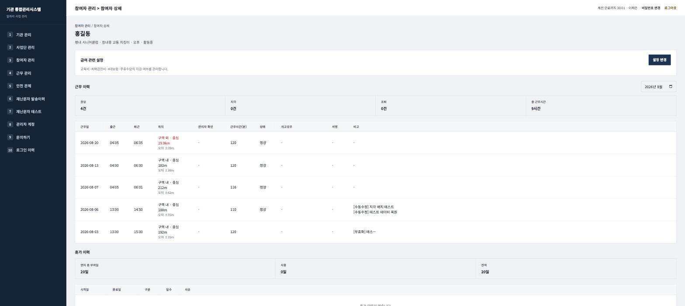
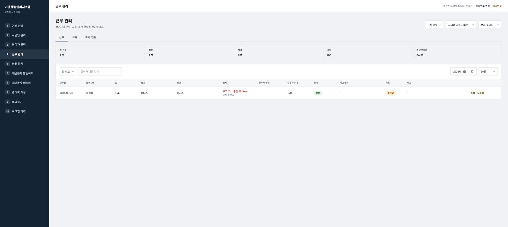
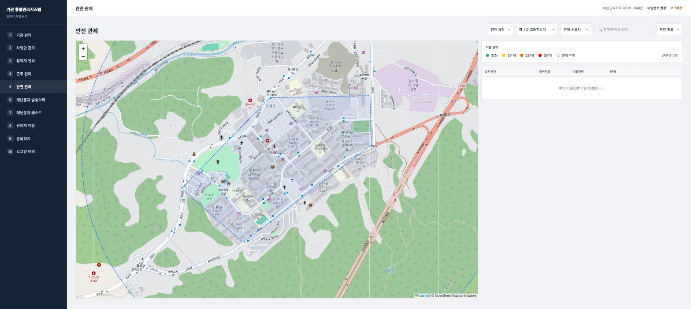
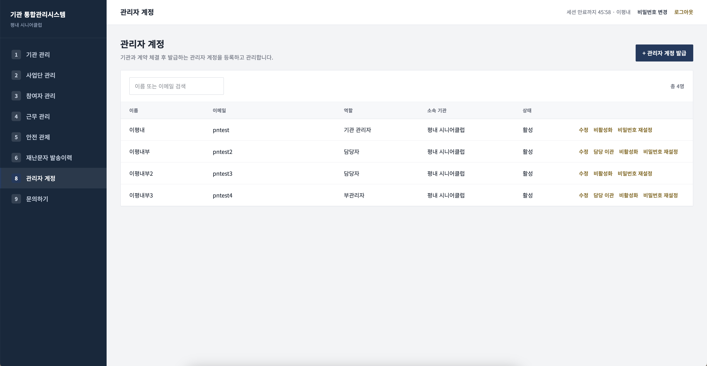
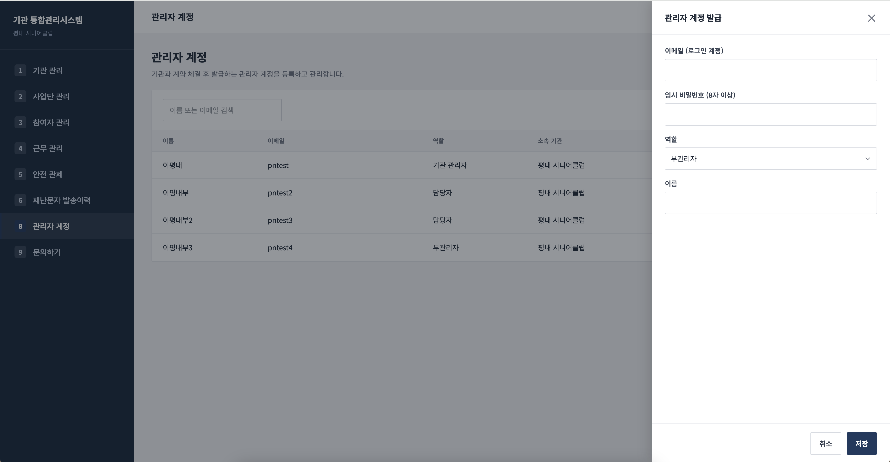

로그인
-
1
관리자 페이지 주소로 접속합니다 — /admin
-
2
이메일과 비밀번호를 입력하고 로그인을 누릅니다.
-
3
로그인 후 화면 오른쪽 위에 세션(총 1시간) 만료까지 남은 시간이 실시간으로 표시됩니다.
세션 만료 5분 전 화면 상단에 안내 배너가 뜨며, 연장 버튼을 클릭시 세션이 연장됩니다.


비밀번호는 상단 바의 비밀번호 변경 버튼으로 언제든 바꿀 수 있습니다.

기관 관리
기관명, 대표자, 전화번호, 팩스번호, 사업자등록번호, 주소, 운영 상태를 한 화면에서 확인합니다. 대부분의 경우 계약 시 서비스 운영팀이 기관 정보를 먼저 등록해 두므로, 기관 관리자는 정보가 정확한지 확인하고 변경 사항이 있을 때 수정하면 됩니다.
-
1
기관의 소속 직원 / 사업단 목록 / 수요처 목록을 확인할 수 있습니다.

사업단 관리
-
1
오른쪽 위 + 사업단 추가 → 기관 선택, 담당자(복수 지정 가능), 사업 유형, 사업단명, 시작일·종료일, 시작·종료 시간, 시급을 입력합니다.
-
2
목록에서 사업단명을 눌러 사업단 상세로 들어가면 4개 탭이 있습니다.
사업단 상세 — 4개 탭
| 탭 | 용도 |
|---|---|
| 수요처 관리 | 참여자가 실제 근무하는 장소(수요처)를 등록·관리합니다. 수요처별 담당자, 배정된 조, 근무시간, 활성 상태를 지정합니다. |
| 조 관리 | 오전/오후 등 근무 조를 만들고 조별 근무시간·인원을 관리합니다. 수요처에 조를 배정하면, 그 조 소속 참여자는 자동으로 해당 근무시간을 따릅니다. |
| 참여자 명단 | 이 사업단에 참여 중인 인원을 조회·검색하고, 휴무·연차·개인 스케줄·참여종료·삭제를 처리합니다. |
| 양식 출력 | 월을 선택해 활동 대장, 활동비 지급 대장을 엑셀로 내려받습니다. |


참여자를 조에 배정하려면 먼저 그 조가 수요처에 배정되어 있어야 합니다. 순서: 수요처 등록 → 조 등록 및 수요처 배정 → 참여자 등록 시 수요처·조 선택.
참여자 관리
-
1
사업단 상세 → 참여자 명단 탭 → + 참여자 추가. 엑셀 양식 다운로드 후 여러 명을 한 번에 업로드하거나, 이름·성별·수요처·조를 직접 입력해 한 명씩 등록합니다.
-
2
동명이인이 있으면 이름 뒤에 숫자를 붙여 구분합니다 (예: 홍길동1, 홍길동2).
-
3
이 화면(참여자 관리)에서는 유형·사업단·수요처·이름으로 전체를 가로질러 검색할 수 있습니다.
-
4
이름을 누르면 참여자 상세로 이동해 근무 이력·휴가 이력·급여 관련 설정을 확인합니다.
참여자 명단의 삭제는 되돌릴 수 없습니다. 일시적으로 근무를 쉬는 경우는 삭제 대신 휴무 또는 연차, 사업단을 완전히 그만둔 경우는 참여종료를 사용하세요.



근무 관리
| 탭 | 내용 |
|---|---|
| 근무 | 일자별 출근·퇴근 시각, 근무 위치(등록된 구역 안/밖 및 거리), 근무시간(분), 정상·지각·조퇴 상태를 확인합니다. 개별 기록은 수정, 잘못 찍힌 기록은 무효화할 수 있습니다. |
| 교육 | 필수/선택 교육을 등록하고(교육 정의), 참여자별 이수 현황·필수교육 이행 현황을 확인합니다. |
| 휴가 현황 | 이달의 휴가 건수, 유급/무급 구분, 총 휴가일수와 참여자별 휴가 이력을 확인합니다. |

위치 열에 빨간색으로 거리(예: 19.9km)가 표시되면 등록된 근무 구역을 벗어나 출·퇴근을 찍은 경우입니다. 사유를 확인한 뒤 필요하면 기록을 수정하세요.
안전 관제
-
1
조회할 사업단을 선택하면 근무 구역(점선 경계)과 참여자 위치가 지도에 표시됩니다.
-
2
이탈 정도에 따라 정상(초록) → 1단계 → 2단계 → 3단계(빨강) 순으로 표시됩니다.
-
3
오른쪽 패널에서 감지 시각·참여자명·이탈 거리·단계를 확인하고, 확인 필요 항목을 우선 처리합니다.

재난문자 발송이력
발송 시각, 지역, 종류, 내용, 대상 인원, 성공/실패 여부를 조회합니다. 별도로 조작할 항목은 없고,
발송이 잘 되고 있는지 확인하는 용도로 사용합니다.
근무지역·근무시간 조건에 해당하는 재난문자만 발송됩니다.
참여자가 근무 시간에 출근하지 않더라도 재난문자는 발송됩니다.

관리자 계정
| 역할 | 권한 |
|---|---|
| 기관 관리자 | 소속 기관의 모든 관리자 계정 발급 및 관리 |
| 담당자 / 부관리자 | 배정된 사업단 범위 내 업무 처리. 담당자 교체 시 담당 이관으로 맡은 사업단을 다른 계정에 넘길 수 있습니다. |
-
1
오른쪽 위 + 관리자 계정 발급 → 이메일(로그인 계정), 임시 비밀번호(8자 이상), 소속 기관, 역할, 이름을 입력합니다.
-
2
발급된 임시 비밀번호는 담당자에게 직접 전달하세요. 담당자는 로그인 후 비밀번호 변경으로 바꿀 수 있습니다.
-
3
퇴사 시 비활성화하여 계정을 정리합니다.
- 비활성화하기 전에 해당 담당자가 담당한 사업단을 다른 담당자에게 이관해야 합니다. -
4
사업단을 이관할 때에는, 담당 이관 버튼을 눌러 진행합니다.
사업단은 한 사람에게 또는 여러 담당자에게 나눠서 이관할 수 있지만,
맡고 있던 사업단 전부를 빠짐없이 배정해야 합니다.
- 담당 사업단이 하나라도 남아 있으면 계정을 비활성화할 수 없으니, 반드시 이관을 먼저 진행해야 합니다.
이관하면 그
사업단에 속한 수요처의 담당자 표시도 함께 자동으로 바뀝니다. 수요처 담당자 변경은 선택 사항입니다.


문의하기
화면 왼쪽 메뉴 맨 아래 문의하기에서 담당 이메일로 바로 연락할 수 있습니다. 오류가 발생했다면 화면 캡처를 함께 보내주시면 원인 확인이 훨씬 빨라집니다.